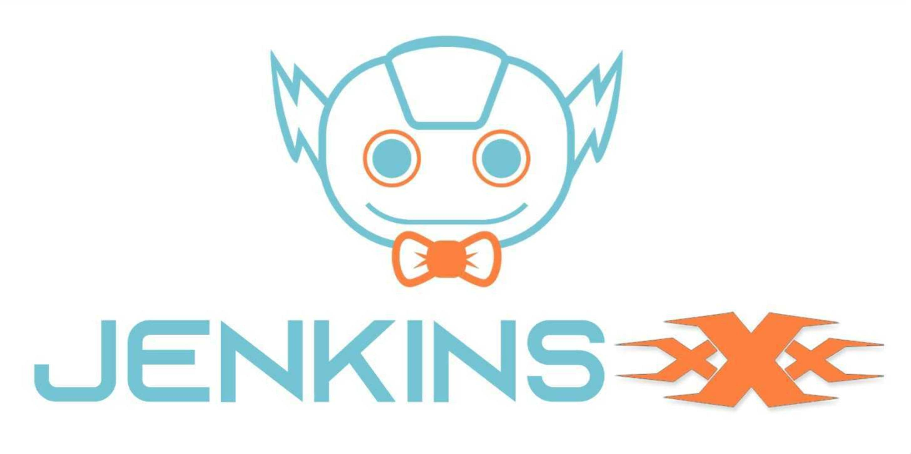
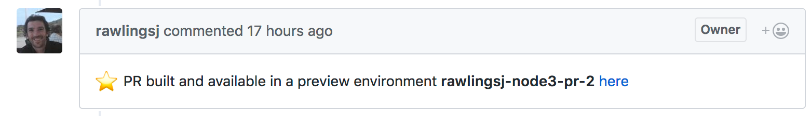

Jenkins X 3.x GA 来了！

Jenkins X 3.x 正式发布！
我非常激动的向大家宣布 Jenkins X 3.0 GA 版本正式发布啦！
Jenkins X 在 kubernetes 上自动执行 CI/CD，这将帮助你提升:
自动化 CI/CD 流水线可以让你将精力放在应用程序的代码实现上，Jenkins X 会为你的项目自动创建通过 GitOps 管理的 Tekton CI/CD 流水线，这将会使你的流水线在不同仓库中保持更新或者为特定仓库覆盖流水线或步骤变得非常简单。
通过 GitOps 在不同的环境自动升级版本化产物，比如暂存区，准生产，生产环境。不管这些环境是否在同一个 kubernetes 集群中运行或者你为这些环境使用了多集群方式。
环境预览能够让你通过 Pull Requests 提交代码变更，之后会自动创建一个预览环境，在 Kubernetes 上运行你的代码，这样会让你在代码允许合并到主分支之前能更快的得到来自团队的反馈。
ChatOps 在 Pull Requests 进行反馈时可以进行评论，允许/挂起变更，触发一个为其他测试以及 ChatOps 命令而设计的可选流水线。
Demo
demo 将会演示如何使用 Jenkins X 进行代码开发

文档
主要改动的文档有:
以下是一个简短的总结:
3.x beta 版本变更情况
使用 Pipeline Tracing 集成了可观察和监控的特性。
自动升级使你的集群保持最新状态
2.x 版本开始的用户变化
作为一名用户，Jenkins X 的高级 UX 是相似的:
使用 tekton 的自动化持续交付流水线为你的仓库各个环境之间实现自动版本变更
当你的仓库执行拉取请求时，创建独立的预览环境，你的团队可以预览你的变更并在代码允许合并到主干分支之前及时进行反馈。

新特性
我们默认使用 vanilla tekton YAML 定义流水线并且使用 tekton 目录加速它
我们内置了一个开源仪表盘用来可视化流水线和日志，你可以通过以下方式调用它:
jx dash
- 我们有一款基于出色的 octant 平台提供的完整 Kubernetes 和 Jenkins X 控制台，你可以通过以下方式尝试使用下:
jx ui

平台变更
目前我们使用 helm 和 helmfile 以及可选的 kustomize（采用 GitOps 样式）在任意命名空间下定义和配置 Jenkins X、工具和应用。
开箱即用支持多集群这样可以让运行流水线的暂存区以及生产环境与你的开发集群隔离开，可以创建和发布稳定的容器镜像和其他产物。
安装和升级 Jenkins X 方面，我们使用 terraform 将其安装到诸如 Azure、Amazon 或 Google 这样的云资源中，另外也同样支持 premise、minikube 和 OpenShift - 可以通过管理指南查看更多细节。
- 实际上安装 kubernetes 资源已经使用 git 命令替代了，所以它完全可以在容器内可靠地运行。
我们默认使用 Kubernetes 外部密钥管理 Jenkins X、开发工具和应用的密钥。
这也就意味着我们支持不同的密钥后台比如 Alibaba Cloud KMS Secret Manager、Amazon Secret Manager、Azure Key Vault、Hashicorp、Vault 或者是 GCP Secret Manager。
同样我们可以查看所有 kubernetes 资源，可以直接在 git 内自定义它们（Kubernetes Secrets 除外）因而可以用 GitOps 这种非常简单的方式版本控制、审核、推理你的 kubernetes 资源。
内置的 TLS 和 DNS 支持 Health 报告以及通过 kuberhealthy 可视化健康状况。
我们目前有一个 LTS 发行版可以让你切换到 Jenkins X 较慢的发布节奏中。
目前我们在生产环境使用 Jenkins X 3.x 已经有几个月的时间了（CI/CD 使用的是基于 3.x 的代码并以一种标准的方式升级我们的集群）目前使用、操作配置都变得更加简单容易了。
我们已经持续交付 Jenkins X 的变更到生产集群已经有几个月的时间了，运行的同样很棒 - GitOps 棒棒哒！
总的来说 Jenkins X 3.x 已经变得更简单也更灵活。目前支持越来越多的平台，扩展和配置其他平台也会变得容易。
入门
如果之前从来没有用过 3.x 可以参考管理指南在你的云提供商提供的 Kubernetes 集群或者 minikube 上安装 Jenkins X。
如果你之前使用过 3.x alpha 版本这里有迁移说明可供参考。
使用过 Jenkins X 2.x 版本的朋友可以查阅 2.x 迁移说明。
当你的集群安装或者迁移成功后，可以查看用户指南来学习如何使用 Jenkins X 持续进行软件开发。
最后的一些想法
非常感谢所有的贡献者们、Jenkins X 社区的朋友们以及所有我们使用的相关开源项目一起参与到了整个 beta 版本当中。从 2.x 到 3.x 的提升是了不起的，大家都干得漂亮！
请尝试使用一下 Jenkins X 能让我们知道你的想法或者提出一个 issue。所有的反馈都会重视 - 特别是那些怎样能够帮助你提升开发效率的反馈。
如果你通过使用一些工具比如 helm、helmfile、knative、lighthouse 还有 tekton 等等对 Kubernetes 进行持续交付感兴趣的话，不妨加入这个社区 - 它真的非常有趣。
任何问题以及反馈请联系 slack https://jenkins-x.io/community/#slack